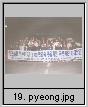
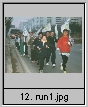
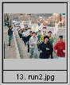
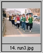
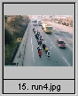
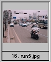
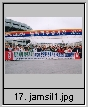
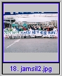

추진 계획(개요, 참가자, 구간 운용) 추진 결과 보고 행사 사진 모음
행사 추진 보고 : 추진위원장 김도연 기획담당
[총괄]
|
작년에 이어 두 번째인 올해 국종달은 국토종주를 통한 나라사랑과 친환경정신 함양 등 몇
가지 목적을 내세우고 전국 아마츄어 마라톤동호회 연합(약 70개 단체) 주최로 2000년 10
월 28일-2001년 1월 1일까지 진행되었다.
연 참가인원이 1600여명에 이르러 외형적으로는 전년도 보다 3배 정도 커졌으나 그 열기는 전년에 못미쳤던 같다. 작년에는 새로운 세기를 맞으며 통일을 기원하는 하나의 이벤트로서 충분한 매력이 있었다. 그러나 올해는 뚜렷한 테마를 갖지 못한 것이 그 원인인 것 같다. 우리 탄천검푸마라톤클럽에서 담당한 평택-잠실 구간 참가자는 68명이며 2000년 12월 24일 오전 7시 40분 평택 시청앞을 출발하여 오후 3시 37분 잠실 종합 운동장앞에 도착하였다. 검푸이외 토공, 삼성의료원, 조흥은행이 단체 참가 하였으며 개인 참가자는 8명이었다. |
[추진 경과]
|
* 11.16 국종달 평택-잠실 구간 추진일을 12월 24일로 결정(임시 총회시)
* 11.16 행사 추진 준비위 구성 - 심영종, 윤재경, 조상국, - 심영종(위원장, 대외업무), 윤재경(행정 및 참가 인원 관리), 조상국(총무사항) * 12. 11일 심영종 지방발령으로 김도연 대행 * 12. 7 참가자 명단 제출(국종달 게시판 게시, 윤재경) - 탄천검푸 51명 등 77명 * 12. 8 경기 지방경찰청 방문 협조 요청(심영종) * 12.12 경기 지방 경찰청 1번 국도 이용 난색(경기청 담당자 회장과 통화) - 1번 국도를 최소화 하는 코스 설계 요청(경찰청) * 12.16 코스 설계(김도연, 김영헌, 오재환) * 12.17 평택 도착팀 마중(김도연, 윤재경, 강형구(토공), 김상경 내외(조흥)) * 12.18 3개 코스안 제시(조상국 경찰청 방문) - 1안 전년도 코스, 2안 수원 우회, 3안 1번 국도 회피 * 12.20 경기도 경찰청 '24일 교통협조 불가' 통보(경기청 담당자 김도연과 통화) - 중운위 윤석기 경찰본청 방문했으나 별무효과("도에서 난색이면 우리도 못함") * 12.21 평택-잠실 구간 중 경기청 관할 9개 경찰서 홈페이지에 「교통지도 협조」요청 - 서울 구간 문제 없었음(개인 참가한 최동선(수서경찰서 감사관)님 적극 지원) * 12.23 9개 경찰서 협조 약속 확인 * 12.24 07:40 평택 시청 출발 15:37 잠실 종합 운동장 앞 도착 종료 - 총 68명 참가(검푸 24, 토공 12, 삼성의료원 12, 조흥은행12, 개인 8명) * 12.26 종료보고 (국종달 게시판 게시, 김도연) |
[당일 스케치]
|
* 삼성의료원, 조흥은행, 개인 참가자 삼성의료원 버스편 이용 삼성의료원 출발(06:10)
* 탄천검푸, 토공 인원 전세 버스로 중앙공원 출발(06:26) * 평택시청앞 집결, 스트레칭 후 출발(07:40) - 중운위 김윤회, 신동희, 윤현수 동참 * 평택-잠실 전구간 주파 희망자 페이스에 맞춤. - 전구간 주파 희망자 6명(조흥 4명, 중운위 2명) - 5구간 종료시 예상 시간 보다 1시간 지연 * 8개 구간 7개 교대 지점 및 중간 지점 식음료 (도시락, 바나나, 쵸코파이, 귤, 물, 스포츠 음료) 공급 |
| 국종달 참가 사진입니다. 작은 사진을 찍으면 확대 사진이 나옵니다. 더 큰 사진은 "큰사진"을 누르면 됩니다. |
| 
큰사진 |
평택-잠실 구간을 시작하기 전 참가자들 전부 평택시청 앞에서 국종달 플래카드를 들고 |
|  | 아직 어둠이 가시지 않은 평택시내를 지나는 국종달 참가자들 |
| 
큰사진 |
송탄 경문대학 앞을 지나는 국종달 행렬. 조금 뒤떨어져 오고 있는 또 한무리의 참가자들 |
| 
큰사진 |
경문대학을 지나고 있다. 전면에 나선 검푸들. 자신만만한 임상준회원, 힘들어하는 부회장님 |
| 
큰사진 |
오산을 향해.무려 30여명이 달리고 있는 모습 |
| 
큰사진 |
성남시계를 들어서는 순간. 경찰차와 경찰 오토바이의 어마어마한 선도를 앞세우고. 역시 분당이 최고 |
| 
큰사진 |
평택-잠실 구간을 마치고 참가자들 전부 잠실운동장 앞에서 국종달 플래카드를 들고 |
| 
큰사진 |
평택-잠실 구간을 마치고 검푸회원들 잠실운동장앞에서 국종달 플래카드를 들고 |